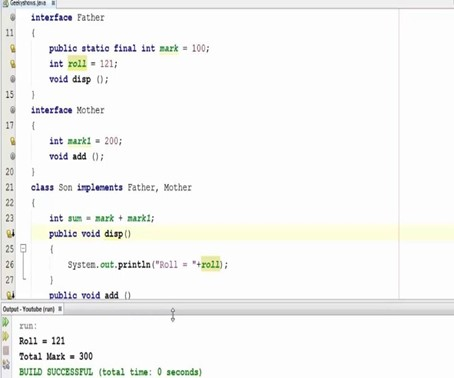

THE LIMITLESS POSSIBILITIES OF COMPUTER PROGRAMMING
Vivek Rana
Content:
- Introduction
- Programming Languages
- Data Types
- Classes
- Website Implementation
- Graphical User Interfaces
- Input and Output
- Validation
- Errors
- File Input and Output
- Sharing Code
- Conclusion
- References
Introduction
Computer programming has built the foundation of many of the websites and games we see today. This website will cover the various aspects of computer programming and show that it is essential for many everyday tasks. This includes input/output, images, text validation, and more. These various aspects are used together often for user interactions. The most basic elements of computer programming will be introduced first, followed by the more advanced.
“Simply put, programming is the process of instructing computers to perform several computing tasks. From a simple calculation to compute highly accurate machine learning models, we can get anything from computers & smartphones. The only problem is that computers don’t understand human languages as the central brain behind it only understands binary signals. This is where computer programming comes into play. We use a programming language to make computers understand the exact specific steps to perform for our desired output.” (Tyagi, September 19, 2020)

Figure 1: Code Example
Programming Languages
There are various programming languages that are used. Some of the most common programming languages include Java, Python and C++. Each programming language has different conventions that a person needs to know before being able to code with them. For example, comments in Java require //, but Python requires #. These comments are essential for other programmers to understand the purpose of specific code.
Data Types
There are various types of data that programming languages use. The most common ones are int for whole numbers, double for decimal numbers, char for a single character, and string for text. Variables store these various types of data to be used throughout the program. So, variables are essential to programs because they are needed for programs to store data. Without variables, numbers and text could not be stored anywhere.
Classes
Before even being able to create and use variables, classes are needed. Classes are another essential element of computer programming because they contain the methods and variables. Classes usually interact with other classes because each class is able to serve a specific purpose to make programs more organized. For example, if a program serves the function of a calculator, then one class can focus on the user input while another focuses on the calculations. So, theses two classes would interact and rely on each other.
In Java class declaration would look like the following: public class thisIsAClass. So, the keyword class is required to create a new class. It is important to remember that a class is a blueprint for creating an object. Class declaration can occur anywhere in a program but usually occurs at the beginning. Classes are essential to perform object-oriented programming.
Figure 2: Java Programming Interface
Website Implementation
Websites are built from different progamming languages. Some websites use Java, some use Python, etc. Various websites have a preference based on website security, use, and more. There is much more than just a progamming language that goes into the creation of a website. This includes website hosting, html, and more.
Graphical User Interfaces
The GUI is the graphical user interface, which can be used to implement buttons, labels, windows, and more for a program. Essentially it allows for user interaction with an application. The GUI is another essential element of websites because the user cannot interact with applications without it. For example, a website GUI can contain the buttons to access various parts of the website. The same applies to pop-out windows and other elements of websites.
Input and output are also an important part of programming, which allows user to input various data such as text or numbers. The program can then perform various functions such as math calculations with the inputted data. The new value or text can then be outputted to the user. Programming makes it easy to perform basic or even advanced calculations with numbers the user inputs. Input and output are what most websites today use for users to enter various things like usernames and passwords.
Validation
Validation is another important part of programming. Validating the data the user enters is important to ensure the program is receiving the appropriate form of data. For example, if a program is to serve the purpose of a calculator, then the program must use validation to ensure only numbers are entered and not text. If text is entered, then the program must tell the user to not enter text and instead enter a number. Validation is important for websites because many passwords check usernames and passwords to make sure they are correct.
Errors
There are various errors that can occur when trying to compile and run a program. Logic errors are when the program compiles and runs but does not do what you expect. For example, it adds 1 and 2 when you want to add 2 and 3. Syntax errors are when the code does not compile because there is incorrect punctuation or an undeclared variable. Run-time errors are when the code compiles and runs but ends up with an error at one point. For example, the code could run perfectly until reaching a point where it does 1/0, which would cause an error.
It is common to run into errors when programming. Depending on the type of error, it could take from a few seconds to solve up to a few hours. The programming application does not always tell you the exact cause of an error, so the programmer must figure it out. This is why it is important for programmers to keep code organized to easily locate errors. Having code organized also makes it easier for other programmers to read and understand.
Another common element of computer programming and websites is the use of file input and output. File input allows the program to take in a file, this could be Microsoft word documents, binary files, and more. This is very common for websites that require documents. For example, if a website requires a pdf of a purchase order, then it would use file input and output. Output would involve returning the input document with modifications or no changes.
Table 1: Most Used Programming Languages in a School
| School |
|---|
| Class 1 | Class 2 |
|---|
| Most Used | Ruby | Most Used | C++ |
| Java | Python |
Sharing Code
When code becomes very large, it may need to be shared with other programmers, one way of doing so is GitHub. It allows users to share program files easily so a different user can modify it. The modified files are sent back to GitHub and back to the original user to easily download. Many companies and more use GitHub because it allows them to share code for large scale projects that involve multiple people.
Conclusion
Computer programming has various aspects that one needs to know before being able to create a program. However, once one understands the concepts, they can easily create basic or even advanced programs. Most of the websites we use today rely on computer programming languages because they allow for so many possibilities. There are various computer programming languages, but almost all of them are used for websites today, which shows just how essential they are. Therefore, computer programming is what allows users to perform many of the tasks they do online every day.
References
Tyagi, H., September 19, 2020. codeitbro. [Online]
Available at: https://www.codeitbro.com/top-benefits-of-computer-programming/
[Accessed 30 10 2021]